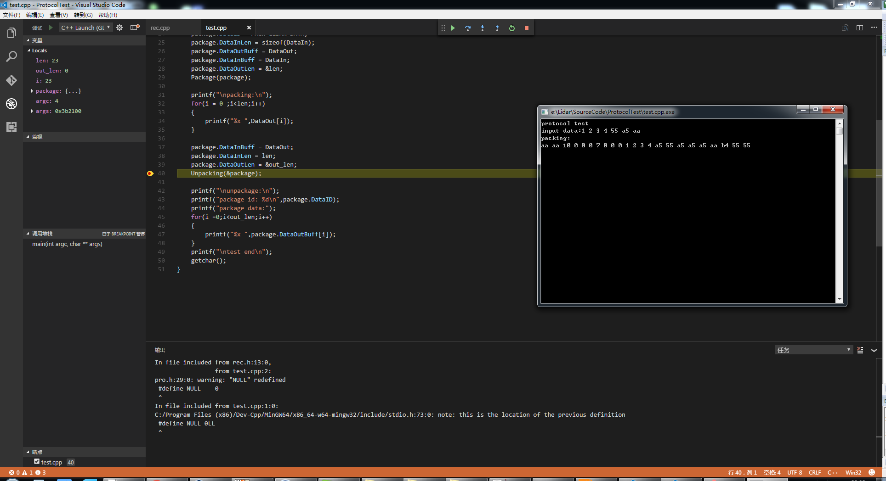

windows下使用vscode调试C/C++
Updated:
需安装的软件
- vscode
- MinGW
- C/C++ 插件
MinGW
GCC/g++编译器，在windows下需要将安装目录添加到path环境变量比如： C:\Program Files (x86)\Dev-Cpp\MinGW64\bin\。安装完成后可以写一个简单的c程序测试下1
2
3
4
5
6
int main()
{
printf("hello world\n");
}
存储文件名称为test.cpp,打开powershell，cd到源文件目录，输入1
2> g++ test.cpp -o test
> .\test
如果输出正常，则说明安装良好
vscode
- 用vscode打开test.cpp所在文件夹
- 按F5，会收到提示，选择环境，选择(C++(GDB/LLDB))。vscode会弹出一个launch.json，将其中的内容改为如下：
1
2
3
4
5
6
7
8
9
10
11
12
13
14
15
16
17
18
19{
"version": "0.2.0",
"configurations": [
{
"name": "C++ Launch (GDB)", // 配置名称，将会在启动配置的下拉菜单中显示
"type": "cppdbg", // 配置类型，这里只能为cppdbg
"request": "launch", // 请求配置类型，可以为launch（启动）或attach（附加）
"launchOptionType": "Local", // 调试器启动类型，这里只能为Local
"targetArchitecture": "x86", // 生成目标架构，一般为x86或x64，可以为x86, arm, arm64, mips, x64, amd64, x86_64
"program": "${file}.exe", // 将要进行调试的程序的路径
"miDebuggerPath":"C:\\Program Files (x86)\\Dev-Cpp\\MinGW64\\bin\\gdb.exe", // miDebugger的路径，注意这里要与MinGw的路径对应
"args": ["blackkitty", "1221", "# #"], // 程序调试时传递给程序的命令行参数，一般设为空即可
"stopAtEntry": false, // 设为true时程序将暂停在程序入口处，一般设置为false
"cwd": "${workspaceRoot}", // 调试程序时的工作目录，一般为${workspaceRoot}即代码所在目录
"externalConsole": true, // 调试时是否显示控制台窗口，一般设置为true显示控制台
"preLaunchTask": "g++" // 调试会话开始前执行的任务，一般为编译程序，c++为g++, c为gcc
}
]
}
注意中间的miDebuggerPath要根据实际路径来设置。
再次按F5会弹出一个tasks.json，将其中的内容改为如下：
1
2
3
4
5
6
7
8
9
10
11
12
13
14
15
16
17{
"version": "0.1.0",
"command": "g++",
"args": ["-g","&{file}","-o","${fileBasename}.exe"], // 编译命令参数
"problemMatcher": {
"owner": "cpp",
"fileLocation": ["relative", "${workspaceRoot}"],
"pattern": {
"regexp": "^(.*):(\\d+):(\\d+):\\s+(warning|error):\\s+(.*)$",
"file": 1,
"line": 2,
"column": 3,
"severity": 4,
"message": 5
}
}
}选中test.cpp文件，再次按F5就可以运行了。
多文件调试
多个文件的情况下，需要将tasks.json进行修改，将所有的文件添加进来，目前没有找到通用的方法，只能把文件名一个一个的添加到arg里面，后面可能考虑写makefile
1 | { |
进入调试界面如下：

可以看到，基本就是一个轻量级的IDE，非常方便。